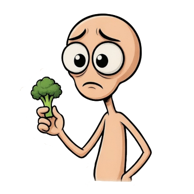
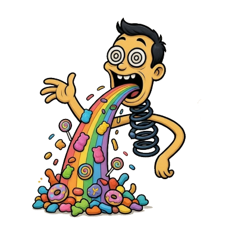

A veces la relación con la comida se vuelve complicada. Puede empezar con el deseo de controlar el peso, verse mejor o encajar, pero poco a poco el cuerpo y la mente comienzan a sentirse cansados.
Si te está pasando algo así, no significa que seas débil. Muchas personas han pasado por lo mismo y han logrado salir adelante.
Tu cuerpo necesita energía para vivir, pensar, estudiar y disfrutar. Comer no es un enemigo, es una forma de cuidarte.
Pequeños pasos que pueden ayudarte
• Recordar que tu valor no depende de tu apariencia
• Comer porciones pequeñas pero constantes
• Evitar compararte con otras personas
• Hablar con alguien de confianza
• Darle tiempo a tu cuerpo para recuperarse
Día 1
Intenta hacer tres comidas pequeñas en el día.
Día 2
Agrega un alimento que normalmente evitas.
Día 3
Come con alguien de confianza o en un lugar tranquilo.
Muchas personas han vivido momentos donde comer se vuelve una forma de liberar estrés, tristeza o ansiedad. Después de eso pueden aparecer culpa o frustración.
Pero esto no significa que no tengas fuerza de voluntad. Tu mente está buscando una forma de lidiar con lo que sientes.
La buena noticia es que ese ciclo puede cambiar.
Cosas que pueden ayudarte
• Comer de forma más regular durante el día
• Dormir lo suficiente
• Identificar qué emociones aparecen antes de comer
• No castigarte después de un episodio
• Entender que mejorar toma tiempo
Día 1
Organiza horarios simples de comida.
Día 2
Antes de comer por impulso, detente unos minutos.
Día 3
Haz una actividad corta cuando aparezca la ansiedad.

Cuando una persona siente que debe compensar lo que comió, suele aparecer mucha presión interna. Esto puede provocar cansancio físico y emocional.
Pero es importante saber algo: No estás solo y sí es posible mejorar.
Tu cuerpo no necesita castigos. Necesita equilibrio, descanso y comprensión.
Ideas que pueden ayudarte
• Comer con horarios más estables
• Evitar pensamientos extremos sobre la comida
• Practicar la paciencia contigo mismo
• Buscar apoyo cuando lo necesites
• Recordar que mejorar es un proceso
Día 1
Haz comidas normales sin intentar compensar después.
Día 2
Cuando aparezca la culpa, respira profundo y recuerda
que comer es una necesidad del cuerpo.
Día 3
Intenta mantener tu rutina diaria normal.